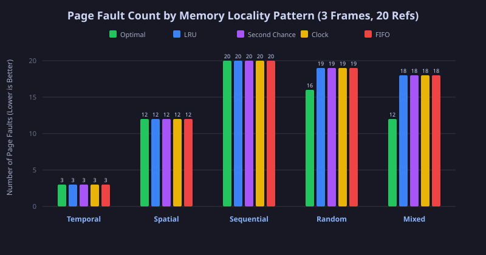
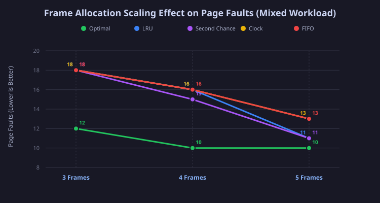
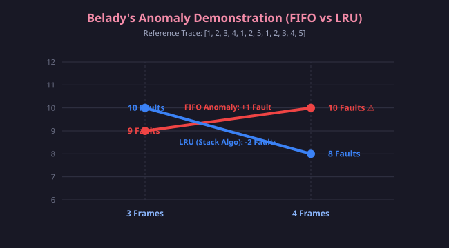

Workload Trace: [7, 0, 1, 2, 0, 3, 0, 4, 2, 3, 0, 3, 2, 1, 2, 0, 1, 7, 0, 1]
| Algorithm | Frames | Total References | Hits | Faults | Hit Ratio | Fault Ratio | Replacements |
|---|---|---|---|---|---|---|---|
| Optimal (Belady's MIN) | 3 | 20 | 11 | 9 | 55.00% | 45.00% | 6 |
| Second Chance | 3 | 20 | 9 | 11 | 45.00% | 55.00% | 8 |
| LRU (Least Recently Used) | 3 | 20 | 8 | 12 | 40.00% | 60.00% | 9 |
| Clock | 3 | 20 | 6 | 14 | 30.00% | 70.00% | 11 |
| FIFO (First-In, First-Out) | 3 | 20 | 5 | 15 | 25.00% | 75.00% | 12 |



Workload Trace: [1, 2, 3, 4, 1, 2, 5, 1, 2, 3, 4, 5] (12 References)
| Algorithm | 3 Frames | 4 Frames | Difference | Scientific Verdict |
|---|---|---|---|---|
| FIFO | 9 Faults (75.0%) | 10 Faults (83.3%) | +1 Fault | × ANOMALY TRIGGERED (More memory caused MORE faults!) |
| LRU | 10 Faults (83.3%) | 8 Faults (66.7%) | -2 Faults | ✓ STACK ALGORITHM (Monotonically decreasing faults) |
[dmesg 0.256843] Linux version 5.15.0-204-generic (x86_64, 16 CPUs)
[dmesg 0.258183] Run /init as init process
[systemd-analyze] Startup finished in 1.527s (userspace)
[systemd-analyze] graphical.target reached after 1.273s in userspace
Top Service Breakdown:
877ms snapd.seeded.service (Container Assertions)
870ms snapd.service (Snap Store Daemon)
207ms dev-sdd.device (NVMe Storage Initialization)
112ms networkd-dispatcher.service (Network Routing)
91ms systemd-resolved.service (DNS Resolution Engine)